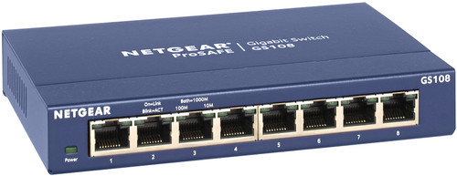

Een unmanaged switch, waar we meestal gewoon switch tegen zeggen, is een layer 2-toestel. Hij werkt met frames binnen een lokaal netwerk. Een frame is een gestructureerd datapakket met adresinformatie over de zender en de ontvanger, en met de data zelf.

Op een unmanaged switch stel je geen VLAN's, redundante paden of prioriteit in. Je vindt ze dan ook vooral in kleine netwerken en thuisomgevingen.